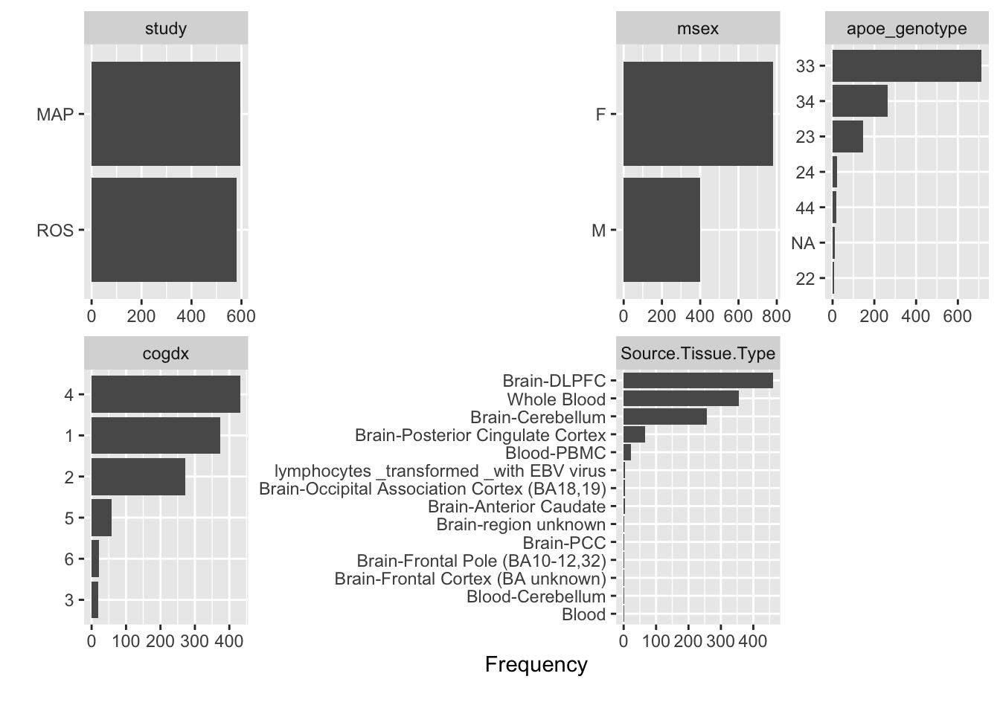
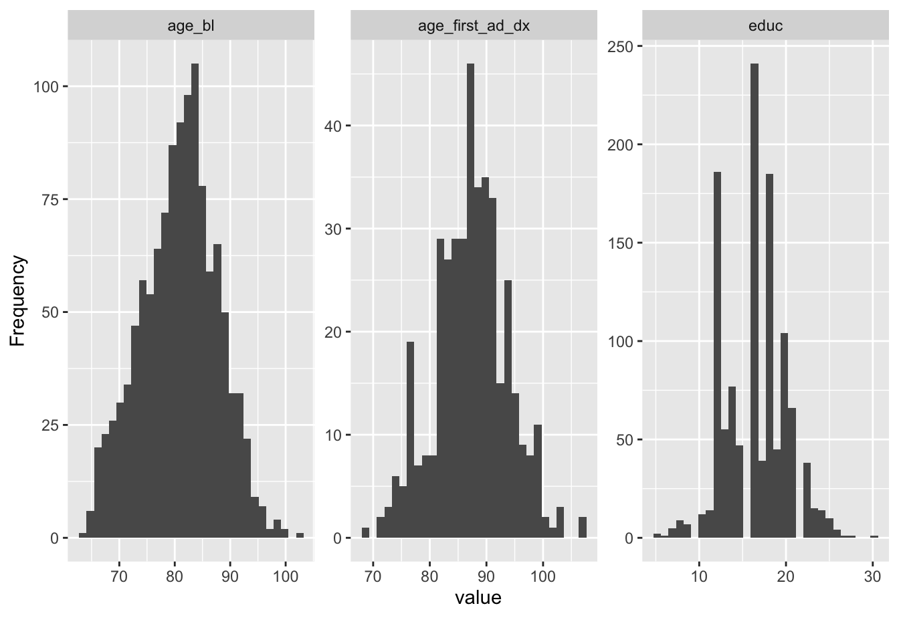

3.8 DataExplorer
- Does not generate a summary table
- Introduce is a nice function to describe the dataframe, but could be better. Would rather a description of the varibles
- Visulaizations are nice, but dataMaid proberly better
| rows | columns | discrete_columns | continuous_columns | all_missing_columns | total_missing_values | complete_rows | total_observations | memory_usage |
|---|---|---|---|---|---|---|---|---|
| 1179 | 8 | 5 | 3 | 0 | 777 | 409 | 9432 | 62784 |

